The case study is about redesign and update a Government Agency website. I choose United States
Department of Agriculture as it servers millions of Americans every year. During my research I found
that it covers 29 agencies. The goal of the redesign was to increase the usability and help all the
USDA’s different users find information successfully and quickly.
The USDA website currently suffers from inadequate responsive web design standards, resulting in a
lackluster aesthetic appeal. Additionally, its navigation structure is poorly organized, leading to
user confusion and challenges in locating desired information.
The Solution:
Given the extensive scope of the website, I initiated the redesign process beginning with the
homepage. To enhance user experience on both desktop and mobile platforms, I focused on streamlining
navigation and reorganizing the site’s hierarchy. This strategic restructuring was aimed at
facilitating easier navigation and enabling users to find information more efficiently.
Timeline
4 Weeks
Tools
Figma
Miro
Adobe Illustrator
Canva
Invision
Team
Athira Prakash
Sophia
My Role
IA
Prototyping
User Testing
Visual Design
USER INTERFACE ANALYSIS
Where to begin?
User Research
We knew we had to redesign the site so there were less steps to get to the most visited pages. After
evaluating the website we created a proto persona for whom we were redesigning this website for.We felt
that the user should be someone who often visits the websites.
Proto persona
Our User jasmine visits USDA website because she needs to find specific information about loans and
grants to invest in her business.
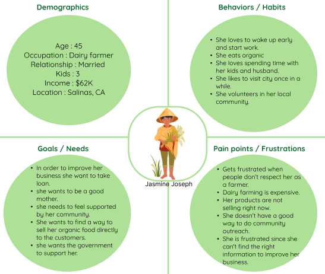
Defined User Flow
My user path: A women and/or person of color who is looking for the options available in loan and grant
section, so they can invest in their farming business. They want to know the types of loans and interest
rates are available.
In order to understand what to redesign I had to know what links and pages users interacted to reach the
Farm Loan Page. When reviewed the flow I could see the user can reach “Farm Loan Page” by multiple
paths.
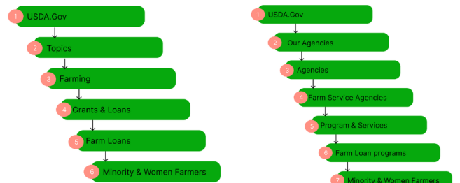
Since there are multiple path to reach the “Minority and Women Farmers and Ranchers loan page ” I believe the
ideal path would be to follow through the Navigation bar in the home page and the easy path will be by
scrolling down in the home page and having a option to taking the shortcut.
What is the Issue?
Heuristic evaluation
In order to check what usability issues they ran into, I had conducted a heuristic analysis to rate the
problems in the evaluation file.
Evaluation File:
File
After evaluating the heuristic issues I annotated the issues starting from the home page.
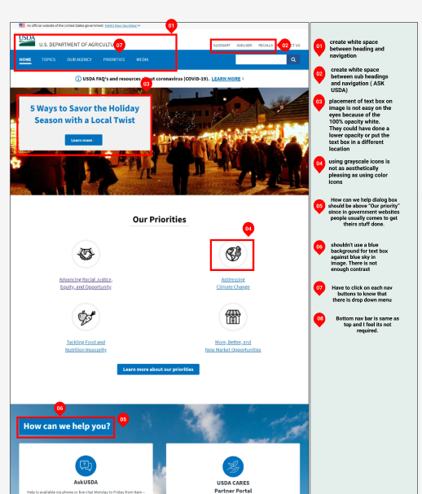
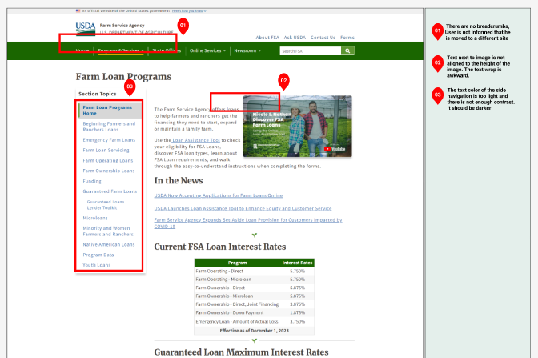
Few Major Issues
I found that the home page didn’t have a clear structure and layout
The looks of the site was very basic blue and white.
There was to much information and cluttered navigation
Color Accessibility Test
The website have pretty basic colors in order to check the color contract and AAA and AA Test I conducted
color accessibility test.
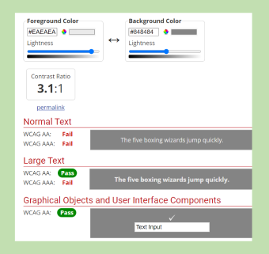
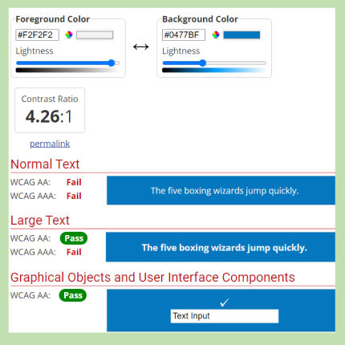
Usability Test
To validate our analysis, we conducted two usability tests. Initially, we formulated a testing plan to
understand user interactions with the existing USDA website. Subsequently, we enlisted willing participants
and carried out a total of five tests..
Below is the test objective:
To find if the users are able to find grants and loan information easily in the
website.
To find out what improvements users needs and wanted to be included in the
website.
To find out how intuitive the existing site is for the users and if they get
stuck while performing certain
tasks.
Second we exclusively concentrated on evaluating the website navigation, specifically the header and footer
sections. Our testing involved two assessments on desktop platforms and an additional two tests conducted on
mobile phones. Given the absence of a dedicated mobile app for the USDA, we assessed the website’s
performance on mobile screens to ensure comprehensive coverage.In the testing plan I had requested to find
details about the loans and grant page by using only the nav bar and the users were confused since it took
them to 2 different home pages.
What is the Issue?
Findings and Results
The user were confused and were not sure how to reach the designation, one of my user used the search bar to
find the details.Most of the users are not interested in how the website or mobile version looks as long as
they are able to find the information easily and efficiently.
The menu bar doesn’t close even when the user click on the close button
next to the menu bar (mobile version)
No Clear hierarchy of information to direct users.
While the navigation bar contains an abundance of details, clicking on
the pages reveals that the main content lacks the corresponding topics or information.
What to Solve?
2*2 Matrix
Our findings were taken and compiled into a feature prioritization matrix. It was important for us to
know what users liked and disliked about the existing USDA site.We also wanted to see what the users
most wanted to see changed or improved with the USDA site.
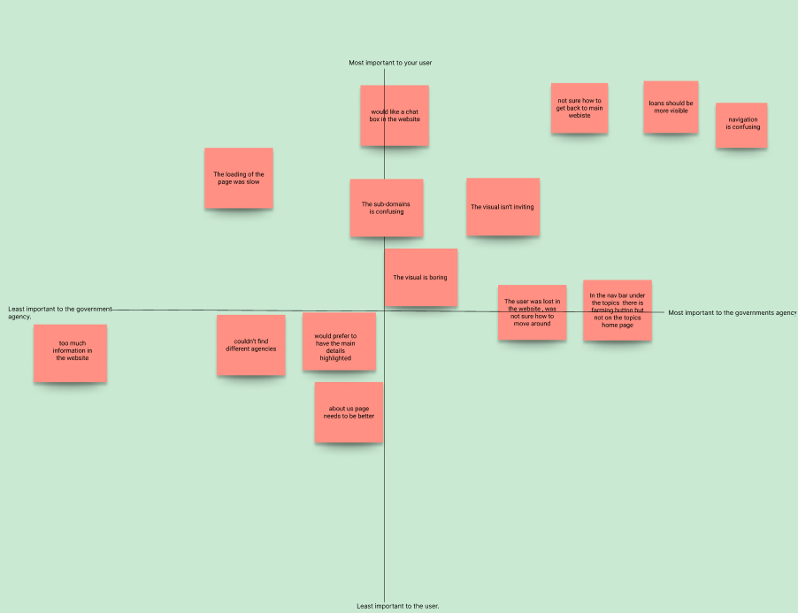
What inspired?
Mood board
I created this mood board with the website’s theme centered around agriculture. Recognizing the agricultural
focus, I incorporated a vibrant palette inspired by farming and food-related colors. The mood board is
influenced by a quote highlighting how a farm can tell a compelling story. Additionally, I integrated
several UI patterns to enhance the website’s usability.
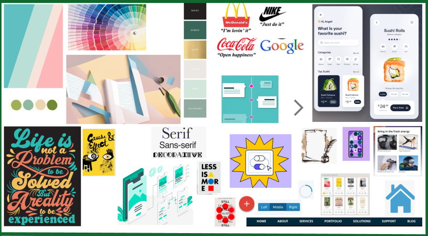
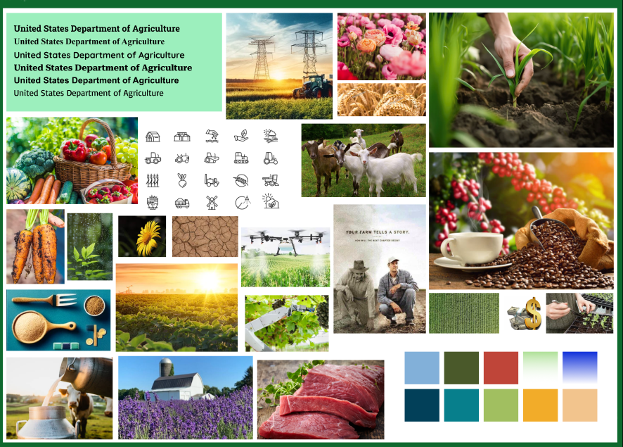
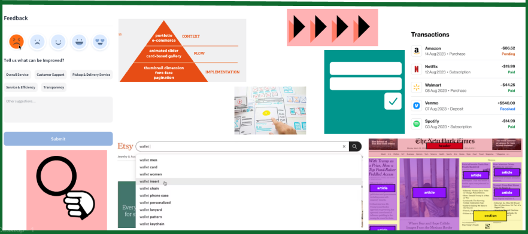
INFORMATION ARCHITECTURE
How to Reorganize?
Card Sorting
In order to prevent users from getting confused from the current navigation I wanted to restructure the
navigation so that it would guide the user’s path .I performed a cart sort to organize all the information
available on the USDA website.By grouping information together, I was able to find a lot of redundancy. The
site highlighted content which I felt is not important to the users. I noted down the primary, secondary
navigation along with the footer details into a sticky notes, shuffled it around, and rebuilt the new
navigation path.
SiteMap
The site map has the primary and secondary navigation details along with the utility and footer details.As
per the card sorting I categories them together. The menu Navigation had a lot of details I decided to
condense the menu under topics to 4 sub categories.
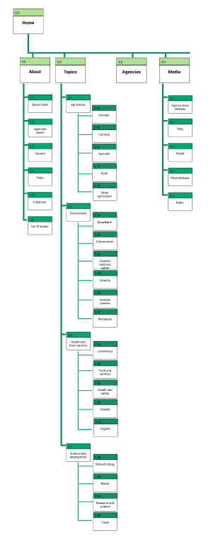
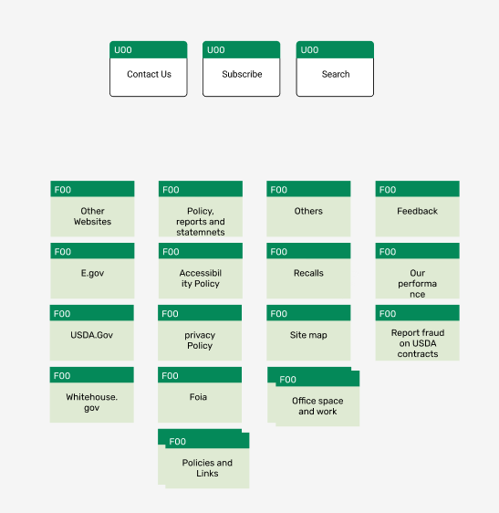
RESPONSIVE DESIGN
How did I go about redesigning it?
New Navigation Prototype
Following the user research, I identified the home page navigation bar as the most crucial element.
Concentrating on the header, footer, and navigation bar, I implemented a hovering function and
introduced a
drop-down menu in the navigation bar, aligning it with the previously established site map.
Additionally, I
incorporated a hovering function in the footer to emphasize the highlighted item upon hovering.
Design Home page / Iterate header & Footer nav
Before I start with the new wireframe in Figma I sketched the layout for all the 5 screens I was redesigning
which helped me in my wireframing process.
In this phase, I undertook a redesign of the header navigation bar, aiming to make improvements from the
initial iteration. I developed distinct components for each dropdown navigation, including various forms. To
streamline the user experience, I opted for a consolidated frame instead of incorporating multiple dropdowns
and sub-dropdowns. This approach enables users to view all the details at once, minimizing the need for
multiple clicks.In this stage I also concentrated on the user’s navigation journey, sketching out the
website layout based on the intended path. Prioritizing user guidance, I organized the page content to
facilitate seamless navigation. While maintaining the effectiveness of certain original website design
patterns, I made refinements to enhance the overall layout.
First Wireframe / Prototyping
Having implemented a new navigation structure, I’ve designed five desktop screens, each featuring a
comprehensive navigation setup with a header, footer, and side navigation. These pages delineate a
simplified user path for enhanced usability.
In parallel, for the mobile application, I’ve crafted nine screens. This mobile interface is tailored to
optimize user experience on smaller screens, accommodating the necessary elements for smooth navigation and
functionality.
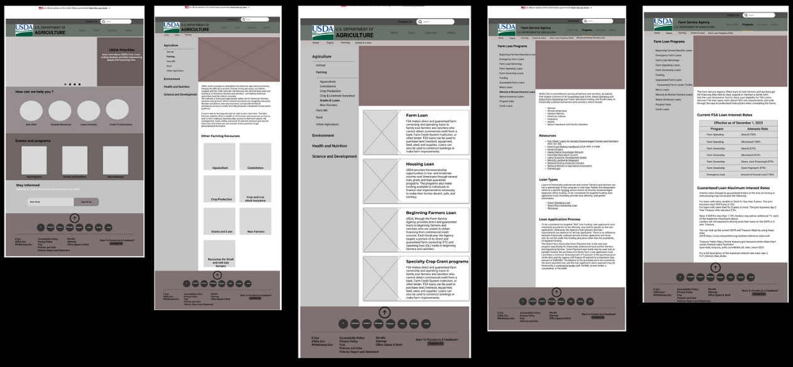
5 Second Usability Test
Having implemented a new navigation structure, I’ve designed five desktop screens, each featuring a
comprehensive navigation setup with a header, footer, and side navigation. These pages delineate a
simplified user path for enhanced usability.
In parallel, for the mobile application, I’ve crafted nine screens. This mobile interface is tailored to
optimize user experience on smaller screens, accommodating the necessary elements for smooth navigation and
functionality.
Few key takeaways:
The front page of the website looks good.
Side navigation of website to be improved..
Align the spacing in the webpages.
Reduce the contents in the website.
Name the icons in the mobile Application.
Font Size to big in the mobile Application.
How did I added vibrancy?
UI Style Guide
I Started with the development of a UI Style Tile, I expanded it by adding UI components that are
consistently applied across both the website and mobile application redesign. Recognizing the need for
an aesthetic overhaul from the old website, I opted for colors that reflect an agricultural backdrop.The
chosen primary and secondary colors impart a warm and bright visual appeal to the website. While
retaining attractive elements from the old design, I even updated logo to align with the new aesthetic.
Crucially, I ensured that the primary colors adhere to both AA and AAA accessibility standards for an
inclusive design.
Responsive Homepage Wireframes with UI style guide
I added visual design to my wireframes and also made few changes based on the previous testing results > I
aligned my spacing> Modified the side nav in the website I named each Icon in the mobile application.
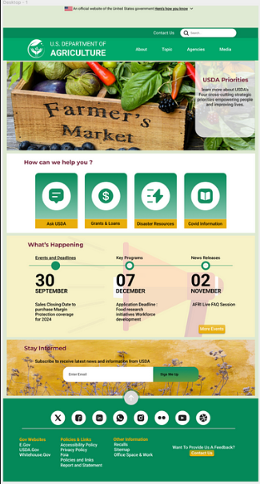
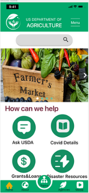
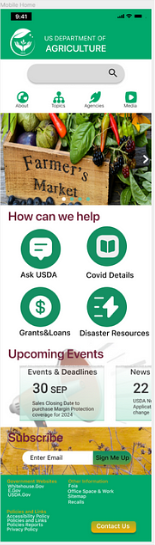
INTERACTION DESIGN
How did I test it?
Usability Test
I conducted usability test for all the 3 models but since the mobile version wasn’t tested earlier I focused
more on it.I created a Usability test Plan Dashboard which included details like test task and business case
etc. The Testing Doc has the feedback received from each users updated.
While performing the testing I also tried out the AB testing by creating 2 screens for the home page with
different way to present the footer details.In screen 1 I had presented the footer details and in the screen
2 the footer details were hide under the hamburger bar.Turns out I was using the progressive testing method
instead of AB testing. The test helped me find out which needs to be included in the screen.
Iterated High Fidelity
Following the usability test, I identified several overlooked issues. While making changes across all
versions.
Few key adjustments below.
Reduced the number of screen in the mobile version so the user can reduce the
number of clicks to reach the contents.
Tried to align the contents with the margin.
Aligned side Nav bar in the website.
Modified the footer details in the mobile version.
Modified the breadcrumbs.
Redesigned the Nav bar in the Mobile App by adding Home icon to it.
HI- FI Prototype
Following numerous iterations and thorough testing, these wireframes represent the refined outcome of the
design process.
I was really excited because it was my first high-fidelity project. But when I started with the research of
the USDA website, I was a bit worried because it’s so huge. I had to look at it multiple times to figure out
the problems users might face and come up with solutions. Every time I sketched my wireframe, I had to go
back several times to make sure I didn’t miss anything important from the actual website.
I found Information Architecture challenging due to the abundance of data, requiring me to distill and
condense information effectively. I engaged in multiple card sorting sessions, meticulously categorizing
details before finally crafting the site map.
In the future I would like to work more on the responsiveness of the website as I am still learning features
and characteristics of Auto layout in Figma.
As always usability testing help me find so many issues which I hadn’t noticed earlier. Due to time
constraints I couldn’t make a lot of changes but I would love to make it better.